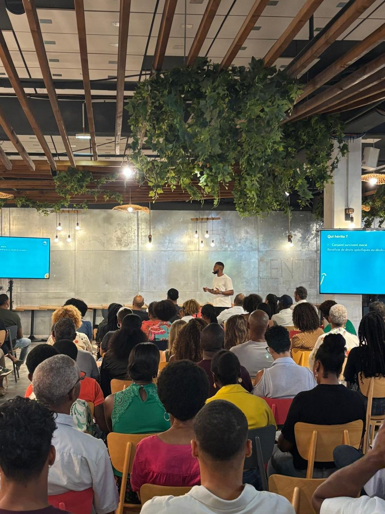

Apéro Invest
Des conférences d'éducation financière accessibles, en présence, pour apprendre en bonne compagnie.
Chaque rendez-vous aborde un thème concret, avec des explications simples et des intervenants locaux. Pas de jargon, pas de prétention : des exemples réels et vécus.
Les dates et la billetterie sont annoncées sur notre compte Instagram.

Plus de 1 500 participants cumulés, environ 140 en moyenne par événement, 11 éditions depuis mars 2025.
Source : Lajan Kontan, chiffres au 10 novembre 2026.
Toutes les éditions
Onze rendez-vous depuis mars 2025, dont quatre consacrés à la Bourse.
2026
- La Bourse : passons à l'action, édition 3
- La rénovation
- La construction neuve
- Budget et gestion financière
- La Bourse : édition Guyane
2025
- Succession & transmission
- La Bourse : passons à l'action, édition 2
- Mindset et investissement x Tony Jazz
- La Bourse : passons à l'action
- Les clés de l'immobilier rentable
- L'investissement expliqué simplement
Qui vient, et pourquoi
Des jeunes actifs, entre 25 et 45 ans, en phase de construction de leur patrimoine. Ils viennent surtout pour :
- Comprendre la Bourse.
- Optimiser leur budget.
- Structurer leur patrimoine.
- Préparer l'avenir de leurs proches.
Tu veux soutenir l'événement ?
Des partenaires locaux s'associent aux Apéro Invest. Découvre les formules et rejoins la communauté.